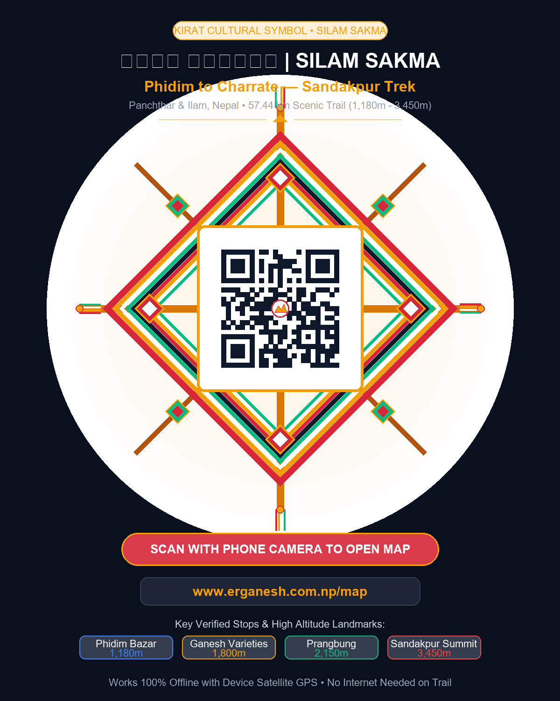

Phidim → Sandakpur
Panchthar – Ilam, Nepal
🪬
✓ Offline Ready
🗺️
All
🍵
Tea & Food
🎒
Trekking Gear
⛽
Emergency Fuel
🔧
Garage
📥
Saving Map Offline
✕
Preparing download...
0%
Zoom levels: 11–15
Calculating tiles...
✕
✕
🪬 KIRAT CULTURAL SYMBOL • SILAM SAKMA
सिलम साक्मा पदमार्ग QR
Phidim to Charrate — Sandakpur Trek (57.44 km)

⬇️ Download Poster (PNG)
🖨️ Vector for Print (SVG)
🔗 Share Map Link